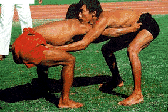

Mukna

It is a sport, which is a combination of wrestling and judo, originating from, and popular in the state of Manipur. Historical records prove, that Mukna has been played since, the first half of the 15th century, but no exact record is available of the earlier meets. In Manipur, there is a belief that this type of wrestling goes as far back as the Hayachak era (Satya Yug), when Pakhangba, the son of the Atiya Guru Shidaba, caught his irate brother, Sanamahi who was the incarnation of a horse, causing chaos and confusion in the kingdom.
Sanamahi was furious with his father, for naming Pakhangba as his successor. Pakhangba trapped his brother at the end of a long and bitter encounter, when he used a deadly grip that rendered Sanamahi powerless. This paved way for the birth of Mukna. This sport really flourished during the reign of King Khagemba (1597-1672). The game is generally played on the last day of the festival of Lai Haraoba (worship of the sylvan diety), and is an intrinsic part of the ceremonial functions.
The competitions are usually in the same weight category. Contestants, wearing a waist belt and a groin belt, hold each other's belts, and then the match begins. Holding the opponent's neck, hair, ear, private parts or legs with the hands, are considered foul.
Boxing and kicking are also not permitted. The competitor who touches the ground first with his head, back, shoulder, knee or the hand, is declared the loser.
Some of the traditional equipment and dresses of the land are used by the players of this game. This is principally, to protect the vital parts of a player's body. It also helps to identify the Ana or the yek, to which the wrestler belongs. The waist belt is known as a ningri. The winner is called a yatra. He is declared winner, if he succeeds in pinning his opponent to the ground - with the whole of his body or his back touching the ground.
There are many techniques or lou, used in Mukna. Absolute physical fitness and skill is required, while mastering these techniques. Today, the game is popular in Imphal, Thoubal and Bishnpur.
BACK TO HOME PAGE